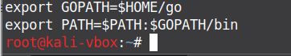

On DEB based systems such as Debian, Ubuntu, Linux Mint, you can install it using command:
$ sudo apt-get install golang
$ vim ~/.bashrc
add to the end of file the following setting

source ~/.bashrc